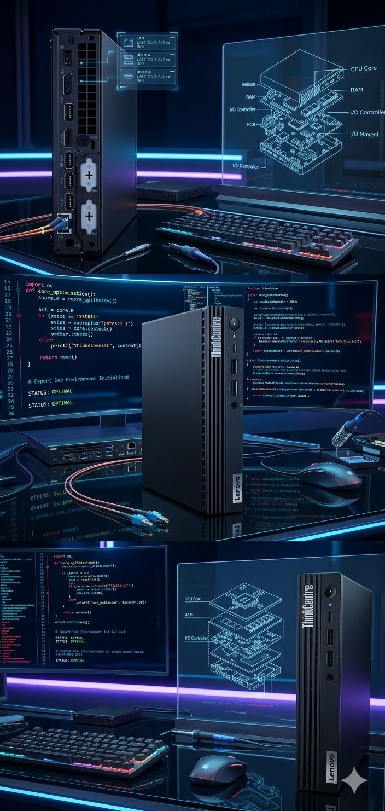

Proxmox Homelab : L'Infrastructure comme Pilier de l'IA
Migration d'une infrastructure Docker hybride vers un environnement de virtualisation de type 1 (Proxmox VE). L'objectif : garantir une haute disponibilité pour mes services IA et multimédia, tout en isolant les workloads critiques dans un serveur Tiny ultra-efficient.
💻 Le Matériel
Serveur Principal
Lenovo ThinkCentre M80q Tiny
- ▸ Intel Core i5-10500T (6C/12T) vPro
- ▸ 16 Go de RAM DDR4
- ▸ Silencieux & Consommation < 35W
Stockage Réseau
NAS Synology DS218 Play
Dédié au stockage massif (Photos, Médias) et aux sauvegardes froides.

Le coeur de mon écosystème : Compact, puissant et stable.
🔄 Transformation de l'Architecture
❌ Avant (Architecture Hybride)
- • Serveur tournant sur mon PC MSI Windows (instable).
- • Dépendance aux mises à jour et redémarrages Windows.
- • Risque de perte de données en cas de crash système.
- • Pas de sauvegarde automatisée centralisée.
✅ Maintenant (Architecture Proxmox)
- • Hyperviseur dédié (Type 1) tournant 24h/24.
- • Isolation totale des services via VM Debian 13.
- • Snapshots avant chaque mise à jour critique (Rollback).
- • Backups automatiques de toute la VM vers le NAS.
📦 Un Écosystème de Services Orchestrés
Immich Project
Gestion de +200 000 photos avec IA (Reconnaissance faciale et objets) tournant sur CPU pur.
Chrisflix Stack
Automatisation média totale : Jellyfin, Radarr, Prowlarr et son pipeline de téléchargement vers NAS.
ChrisMusic (Navidrome)
Serveur de streaming "Bit-perfect" pour l'iPhone. Ma propre alternative à Spotify, sécurisée par Tailscale.
Home Assistant
Domotique centrale pilotant volets, chauffage et sécurité de l'appartement.
GraphRag V7 Stack
Pipeline d'IA documentaire avec LLM Ollama tournant en local. Contextual Retrieval & CPU Inference.
AutoPrint Engine
Automatisation d'impression USB via IMAP/Gmail et USB-Passthrough Proxmox vers CUPS.
Interconnexion Synology NAS
Tous les containers Docker sont reliés au NAS via des volumes **CIFS/SMB** sécurisés. Le serveur traite la donnée (Cerveau) tandis que le Synology gère le stockage froid et les sauvegardes système (VZDump).

🛡️ Sécurité & Accès Distant
VPN Mesh Tailscale
Au lieu d'ouvrir des ports dangereux sur ma box internet, j'utilise un réseau "Zero Trust" avec **Tailscale**. Mon iPhone, mon Mac et mon serveur Proxmox communiquent dans un tunnel chiffré de bout en bout. Cela me permet d'accéder à mes photos ou à la domotique partout dans le monde, en toute sécurité.
🔄 Automatisme de Sauvegarde
Script de sauvegarde quotidienne de la VM envoyant un fichier compressé vers le NAS. 3 versions sont conservées (Retention policy 3).
🔙 Snapshots Instantanés
Avant chaque grosse modification sur Debian ou Docker, une "photo" de l'état du système est prise. Le retour en arrière prend moins de 10 secondes.